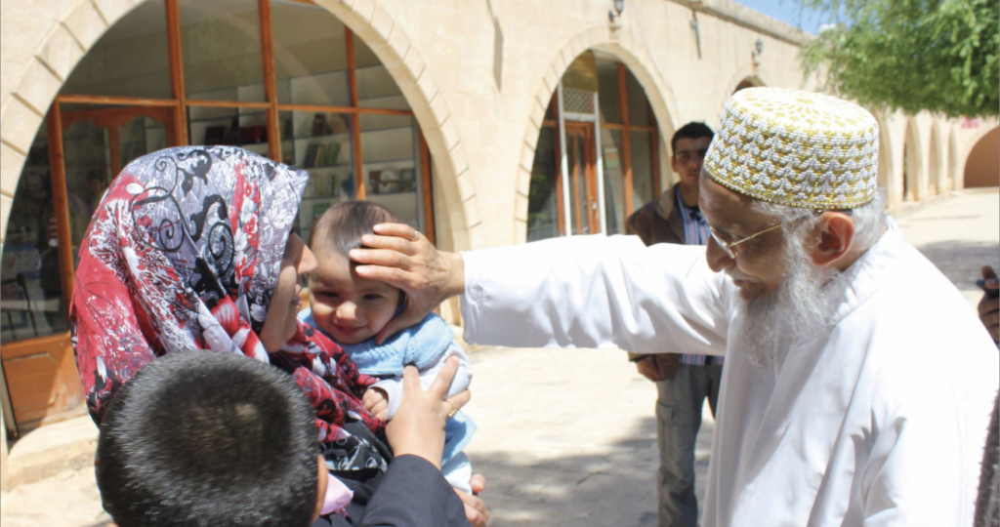

الخلق عيال الله، واحب الخلق الى الله انفعهم لعياله
“All of creation are the children of God, and the most beloved to God of those children is the one who benefits his children the most.”
Rasullulah SA
The 53rd Dai al-Mutlaq, His Holiness Syedna Khuzaima Qutbuddin Saheb RA, founded Zahra Hasanaat in Ramadaan 1417H (1996) in light of his predecessor, the 52nd Dai al-Mutlaq His Holiness Syedna Mohammad Burhanuddin Saheb's RA, wise counsel to his followers: enquire about the wellbeing of your brethren, do not wait for them to come to you, instead, go to them and ask them how they are. Be helpful to them in their time of need and God will help you in your time of need. This was the founding principle of Zahra Hasanaat.

Syedna Khuzaima Qutbuddin RA was an inspiring leader whose kindness and courage was a beacon of hope for a better tomorrow. He established Zahra Hasanaat with the intention to help every individual in the community realize and achieve their aspirations and fulfill their capabilities especially in the areas of health, education and finance. Especially an ardent supporter of education, he believed that education empowered women and men to help create a society that is peaceful, respectful of differences and forward looking. Syedna Qutbuddin believed that such work was the foundation for communal harmony and religious tolerance.
After Syedna Qutbuddin’s RA sad demise in March 2016, his successor, the 54th Dai-al-Mutlaq, His Holiness Syedna Taher Fakhruddin Saheb TUS, continues the vision of Zahra Hasanaat and expands the reach of its programs.
Guiding Principles
Zahra Hasanaat’s foundational values are rooted in the spiritual and religious teachings of the faith: all of creation are the children of God. The ultimate aim of all activities in Zahra Hasanaat is to not only provide aid but to help individuals and families achieve self-reliance. Upliftment, not charity, is beneficial for both the givers and receivers as it instills a sense of connectedness in the community and gratitude for what we have.
Zahra Hasanaat aims to help families realize and achieve their aspirations in the areas of health, education and finance. It was Syedna Khuzaima Qutbuddin's RA wish that the Zahra Hasanaat mission be achieved through proactive engagement with our fellow human beings, our brothers and sisters in the societies we live in.
Zahra Hasanaat interacts with all individuals with respect and compassion, ensuring that the dignity of those receiving help is maintained. The organisation is committed to good governance, transparency, fair management, responsible use of funds, and accountability.